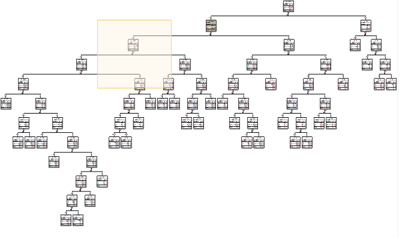
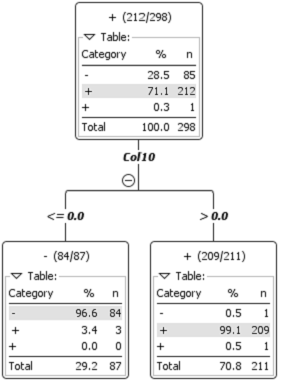

So, the first thing I did was create a simple python script to generate any features I would want.
The second step I took was to create some simple features. I generated the length of the entire name, the length of first and last name, the number of vowels and consonants in the entire name, and the number of vowels and consonants in the first and last name.
My next step was to make sure I could get results. With these simple features, I imported the CSV file into KNIME using a CSV Reader. I then added a Decision Tree Learner and dragged the CSV Reader output to its input. I then executed both of these, and looked at the results.
Unfortunately, none of the features I had created seemed to create a good split very quickly, as seen in the image of my tree.
So, I needed to generate some more features. Then I started looking at the position of vowels and consonants, and noticed that it seemed like any name where the second character wasn't a vowel was a loser, and any where the second character was a vowel was a winner. So I added this to my feature generation, as a boolean(1 or 0) attribute.
When I ran the decision tree with this new feature, there were only four points misclassified. Three were incorrectly classified as losers, and one was incorrectly classified as a winner. I also turned pruning on so it wouldn't try to further split the three errors. This is what my tree looked like in the end.
